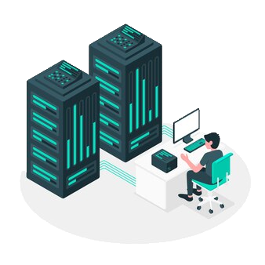

INTRODUCCIÓN
INTEGRANTES:
Andrade Gerardo Fabricio
Camacho Branco Eduardo
Hurtado Bianca


Servidor es un software que se ocupa de responder a las peticiones de ciertos usuarios de una red, denominados clientes, ofreciéndoles determinados servicios. El servidor informático es un programa o aplicación que requiere del hardware de un computador, por lo que complementa los aspectos lógicos y físicos de la computación. Incluso, un mismo computador puede albergar diferentes servidores simultáneamente.